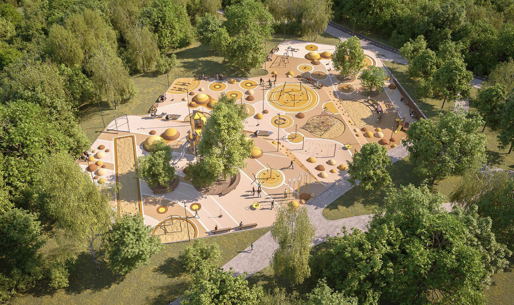

Walking areas, observation decks and a skatepark: Sergei Sobyanin on the project to improve the Shmelevka and Kuznetsovka river floodplains
The Shmelevka and Kuznetsovka river floodplains will be improved In the south of the Russian capital. This is a large green area located next to Krasnogvardeyskaya and Zyablikovo metro stations along Voronezhskaya Street and Orekhovy Boulevard. Sergei Sobyanin spoke about the beautification project.
In previous years, part of the area was put in order: gazebos, playgrounds, picnic areas and dog walking areas appeared here. However, there is still a lot of work to be done: tracks to be made, dead wood to be removed, and a convenient park entrance to be arranged.
“We conducted a survey of local residents to find out how they see the park next to their houses. Muscovites want to do sports, walk the dog, play with their children in the playground, relax and chat in the open. Given these needs, the beautification project has been developed that provides for the creation of new functional areas and easy access for people,” Sergei Sobyanin noted.
A walking route with decking on piles along the Shmelevka River will be arranged, observation decks and quiet recreation areas will be created on the slopes of ravines for Moscow residents to admire the landscapes of river valleys.
A skatepark, a pump track and team sports facilities will appear next to the Zyablikovo metro station. Another sports area will be equipped not far from Guryevsky Proyezd.
Young citizens won't get bored either. Four playgrounds will be built for them. One of them will be the Laminette Yarn, a thematic recreational area. The name refers to the history of this place. For several centuries, one of the main crafts of local residents was the production of laminette yarn, the thinnest wire made of silver or gold, which was used to decorate clothes and jewelry. The motif of the laminette yarn will be conveyed with the color and designs of the gaming equipment.

Specialists will provide the necessary amenities for residents with mobility impairments. Pedestrian ramps and railings will be installed In addition, existing dog walking areas will be repaired, and new ones will be arranged.
After the beautification of the Shmelevka and Kuznetsovka river floodplains, a residential area between Tambovskaya and Voronezhskaya streets and Guryevsky Proyezd are to be put in order. The tracks, paths and lawn will be updated, new street lighting poles, benches and trash cans will be installed.
Due to the delivery of these projects, a cozy park on the waterfront will appear in the south of Moscow, and the residential area will become more comfortable and safe,” the Moscow Mayor summed up.